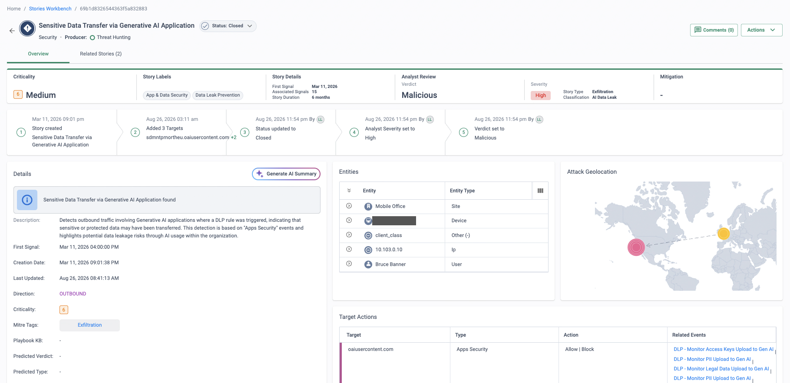

Why this matters
Every security purchase of the last decade came with its own console, its own alert format and its own blind spots. The SOC inherited all of them. Analysts now spend their day translating between tools rather than investigating threats: an endpoint alert here, a firewall log there, an identity event somewhere else — and the job of deciding whether they are the same attack falls to a human with a dozen browser tabs open.
Meanwhile detection engineering — writing and re-tuning SIEM correlation rules — consumes the most experienced people on the team, and the skills shortage makes a credible 24×7 rota unrealistic for most organisations.
The objective: one queue of correlated, ranked incidents, with the evidence and the fix in the same place — and expert eyes on it around the clock.
Why the traditional SOC model is breaking
The tooling reality
- A console per product — endpoint, firewall, SWG, email, identity, cloud…
- Alerts arrive stripped of the network context that gives them meaning
- Cross-tool correlation is a manual, swivel-chair exercise
- SIEM value depends on correlation rules the team must write, test and endlessly re-tune
- Every new source means another collector, another parser, another licence
The people reality
- Detection engineering competes with triage for the same scarce hours
- 24×7 coverage needs a rota most teams simply cannot staff
- Skilled analysts burn out on log plumbing instead of investigation
- Alert fatigue means the queue gets skimmed, not worked
- Institutional knowledge lives in a handful of heads — and leaves with them
“What's your mean time from an alert firing to an analyst knowing whether it matters — and how many consoles do they touch on the way? If we walked the SOC floor now, how many screens would a tier-1 analyst have open? Who covers the queue at 3 a.m. on a Sunday?”
XDR that starts with the answer already collected
Most XDR projects begin with a data-collection programme: agents to roll out, log pipelines to build, formats to normalise. Cato XDR skips that entirely. Every flow from every site, user and cloud instance already traverses a Cato PoP, where the single-pass engine inspects it once — so the platform starts with complete, consistent network telemetry on day one. No agents to deploy, no logs to ship, no parsers to maintain.
On top of that telemetry, Cato XDR correlates related signals into incident stories: one story per suspected incident, ranked by an ML-driven criticality score and mapped to MITRE ATT&CK tactics and techniques. Analysts open the story, see the correlated event timeline, pivot to the underlying raw events, then to the user or site involved — and apply the policy fix in the same console. Detection to response, without changing tabs.
What changes for the SOC
Correlation done for you
Related signals are grouped into a single incident story by the platform — no SIEM rule-writing, no swivel-chair joins across consoles.
Ranked by ML criticality
Stories carry an ML-driven criticality score, so the shift works the queue top-down instead of skimming a flood of raw alerts.
MITRE ATT&CK built in
Each story is mapped to ATT&CK tactics and techniques — a shared language for reporting, threat hunting and board updates.
Detect and respond in one console
Pivot from the story to the underlying events, to the user or site involved, and straight to the firewall or access policy that fixes it.
Cato MDR: 24×7 depth when the in-house SOC needs it
Modernising the tooling doesn't conjure up a night shift. For organisations that can't — or don't want to — staff around the clock, the Cato MDR service puts Cato's own security analysts on the same story queue, 24×7.
- Same platform, same data. MDR analysts work the identical XDR stories your team sees — no separate collector, no onboarding project before coverage starts.
- Triage and verification. Cato's experts investigate stories, confirm genuine incidents and cut through the noise before it reaches your team.
- Guided containment. Verified incidents come with recommended (or, where agreed, applied) policy actions — network-level containment through the same console.
- Augment, don't replace. In-house analysts keep full visibility and control; MDR covers the hours and the depth the team can't staff.
How to run the demo
In discovery, get their console count and their honest mean-time-to-triage from the team's own experience. Then run the demo as a direct answer: one queue, one console, context already attached.
-
Start with the threat picture
Monitor → Threats Dashboard
Show the network-wide threat view built from traffic the platform is already inspecting — across sites, remote users and cloud. Point out that nothing was deployed or shipped to produce it.
-
Open an XDR incident story
Drill from the dashboard into a story. One record per suspected incident — not a page of raw alerts. Walk the header: criticality score, indication, status, the source and targets involved.
-
Show the correlated timeline and ATT&CK mapping
Inside the story, walk the correlated events timeline — the sequence the platform assembled automatically — and the MITRE ATT&CK tactics and techniques it maps to. This is the manual correlation work their analysts do today, done before anyone opened the ticket.
-
Pivot to the user and site
From the story, pivot to the underlying events and the entity involved — which user, which device, which site, what else they've been doing. Full attribution without leaving the console.
-
Remediate via policy — same console
Security → Internet Firewall
Close the loop: add or adjust the rule that contains the incident (block the destination, restrict the app, tighten the user's access). Detection to enforcement with no hand-off to another team or tool.
-
Finish on the ranked queue
Monitor → Stories Dashboard
Show the Stories Dashboard filtered by criticality: this is how a shift starts the day — highest-scored stories first, one queue for the whole estate. If 24×7 came up in discovery, land Cato MDR here: Cato's analysts working this exact queue overnight.
How to prove it in the customer's tenant
The demo tells the correlation story on our tenant; this PoV runs a SOC-workflow pilot on theirs — not "does a story appear?" but "can our analysts work this queue?". The Visibility PoV proves one story exists; this one goes deeper: stories generated inside an agreed warm-up window, one story triaged end-to-end with the disposition recorded, detection sources converging into one queue, a safe true-positive drill, and the story feed landing in the customer's SIEM. Agree the criteria below before configuring anything, per Running a Cato PoV — each has a measurement, an evidence artefact and a place in the CMA where it is read out.
| Success criterion | What we demonstrate | Evidence artefact | Where in the CMA |
|---|---|---|---|
| Stories from their traffic, inside the warm-up window | XDR stories generate from pilot traffic without anyone writing a rule — Threat Prevention stories in near real time once sensors fire; Threat Hunting correlations as the first week of data accrues | The Stories Workbench on the Security Operations preset, dated screenshots week by week from the empty day-zero view onwards | Home → Stories Workbench |
| One story triaged end-to-end | A customer analyst works a real story through the documented flow — Open → Pending → Closed — recording Analyst Verdict, Analyst Severity and Classification via Manage Story | The story's timeline widget showing the status and verdict changes, captured at each step alongside the evidences table | Home → Stories Workbench → story detail |
| Detection sources converging | Stories from the network sensor sit in the same ranked queue as alert stories from the endpoint feeds the customer owns (Cato EPP, Microsoft Defender for Endpoint, SentinelOne or CrowdStrike) | The workbench grouped by Source with more than one producer represented, plus the connector status screen | Home → Stories Workbench · Security → Connectors |
| Benign true-positive drill | The KB's safe EICAR tests fire the Anti-Malware sensor on demand — proof the pipeline detects, on a date we chose (the story walk itself uses real traffic; see the gotchas) | The blocked download plus the event rows under the Anti-malware preset, timestamped against the drill plan | Home → Events |
| Story feed in the SIEM | Detection and Response events for new and updated stories arrive in the customer's SIEM through a Response Policy rule — the SOC keeps its system of record | The SIEM record of a story event beside the Response Policy rule that produced it | Home → Detection & Response Policy |
- Licence honesty: story generation needs the paid XOps (Detection & Response) licence — or the managed MDR service — on the trial account. Cato's XOps documentation and FAQ are explicit that without one, events from some third-party integrations still flow but stories are not generated. Cato EPP alert stories additionally require the EPP licence. Confirm entitlement before any criterion is written down.
- Traffic to detect on: XDR reads the flows the platform already inspects, so the pilot socket and client cohort must be live and genuinely busy — and IPS and Anti-Malware enabled (monitor mode is fine) so the sensors have something to say.
- Endpoint feeds — only what they own: the Microsoft Defender for Endpoint connector needs Defender for Endpoint Plan 2 or an M365 E5-class licence, a global admin to grant consent, and a CMA admin with editor permission for Integrations. Cato EPP integrates natively with no connector. SentinelOne and CrowdStrike alert connectors are documented too — claim only the feeds the customer actually runs.
- TLS inspection: needed only for the HTTPS variant of the benign drill — the HTTP variant works uninspected. Stage it per TLS Inspection: Staged Rollout Playbook if the drill is in scope over HTTPS.
- SIEM target: the SOC's SIEM reachable for an event integration — Splunk and Microsoft Sentinel have turnkey integrations; others via the generic feed.
Configuration walkthrough
-
Confirm the licence, then pin the warm-up window in writing
Verify the XOps entitlement on the trial account before the workshop. Then set the expectation the KB supports: Threat Prevention stories update in near real time for the documented indications, but Threat Hunting correlations are identified over a week's data and anomaly baselines take about 14 days — so the criterion says "within the first two weeks", not "on day one". Write that window into the test-case register per Running a Cato PoV.
-
Connect the detection sources the customer owns
Security → Connectors
For Microsoft estates, add the Microsoft 365 parent connector, then the Defender for Endpoint child connector — a global admin grants the permissions, and the authentication certificate auto-renews. Cato EPP needs nothing: it feeds stories natively. SentinelOne incidents correlate by agent UUID and file hash; CrowdStrike by incident ID. The point of this step is criterion three — more than one producer in one queue.
-
Build the workbench view the SOC will actually work
Home → Stories Workbench
Apply the Security Operations preset (Network Operations exists for the NOC view), widen the window from the default two days as history accrues (maximum 90), and group by Indication or Source — each group header counts its high, medium and low criticality stories, which is the shift's working view. Save the screenshot on day zero: the empty state is the baseline every later capture is measured against.
-
Run the benign true-positive drill
Home → Events
On a date in the drill plan, fetch the EICAR test file from the KB's documented test sources from a pilot machine — the HTTP variant works without inspection; the HTTPS variant proves the TLSi path. The download is blocked and the events land under the Anti-malware preset, attributed to the user and device. This proves the sensor fires on demand; it does not manufacture a story — see the gotchas.
-
Triage one real story end-to-end with their analyst driving
Home → Stories Workbench
Pick a story from pilot traffic and have the customer's analyst — not you — walk the documented drill-down: criticality (an ML score over 40+ parameters), predicted verdict, MITRE ATT&CK mappings, the evidences table and target intelligence. Then close it properly: Actions → Manage Story, set Analyst Verdict, Analyst Severity, Status and Classification, moving Open → Pending → Closed. Capture the timeline widget at each step — it records the verdict and severity changes, which is the evidence trail for criterion two.
-
Feed the stories into their SIEM
Home → Detection & Response Policy
On the Response Policy tab, create a rule scoped to the pilot: choose the story sources, add criteria (criticality, indication, status), set the trigger — Story Created, or Created or Updated — and select Event as the response, wired to the SIEM event integration. Stories then arrive as Detection and Response events in Splunk or Sentinel. The same rule engine sends mailing-list and webhook notifications (ServiceNow, Jira, Slack) if the SOC's workflow lives there.
What good output looks like
The artefacts are the console itself, captured dated as they land: the workbench filling up week by week from its day-zero empty state, one story's timeline showing a disposition recorded by the customer's own analyst, and a story event sitting in their SIEM. Capture weekly — the workbench window caps at 90 days, so evidence is gathered as it happens, never reconstructed at wrap-up.

SOC metrics — from the workbench, never invented
Resist quoting MTTR improvements the pilot cannot measure. The workbench gives you three honest talking points: the criticality distribution (the grouped view counts high, medium and low stories per indication — how much of the queue actually demands senior eyes), story ageing (the Created and Updated columns, and each story's duration, show how long work sits at each status), and queue shape over the weeks (statuses moving from Open to Closed across the register's weekly captures). Put those next to the numbers the customer already tracks and let them do the arithmetic — their baseline, their conclusion, your credibility intact.
Troubleshooting
No stories at all
Check in this order: licence — without XOps or MDR, connector events can flow but stories are not generated; warm-up — Threat Hunting correlates over a week of data and anomaly baselines take ~14 days; traffic — a quiet ten-user pilot gives the sensors little to correlate. Fix the licence, then let the window run.
The workbench looks emptier than it is
The default view shows only the previous two days. Widen the date range (up to 90 days) before concluding stories are missing — mid-PoV, most of the evidence sits outside the default window.
Defender connector won't connect
Confirm the Microsoft licence (Defender for Endpoint Plan 2 or an E5-class bundle), that a global admin granted the parent Microsoft 365 app's permissions, and that the CMA admin holds editor permission for Integrations. Certificates are valid three months and auto-renew — a lapsed grant shows up as a silent feed.
A closed story came back
Stories reopen automatically when new matching traffic appears 12+ hours after closure. That is the platform behaving as documented — brief the analyst before the triage drill so a Reopened status reads as detection continuity, not a fault.
Noisy stories drown the queue
Tune at two levels: scope the Response Policy rule's criteria (criticality, indication, source) so the SIEM and mailing lists only receive what the SOC would act on, and fix chatty detections at the policy generating the underlying events. Network-side Site Operations stories have their own Mute Stories mechanism.
Nothing arriving in the SIEM
No Response Policy rule means no Detection and Response events — the feed is opt-in. Check the rule exists and matches the pilot's stories, then the trigger: a rule set to Story Created stays silent on status and verdict updates unless you chose Created or Updated.
Gotchas & clean exit
- The drill proves the sensor, not the story: the KB documents EICAR tests generating Anti-Malware events — it does not promise a test detection surfaces as a story. Run the drill as event-pipeline proof and let the triage criterion stand on a story from real traffic.
- Near real time has a scope: the KB lists the specific Threat Prevention indications updated in near real time; hunting and anomaly stories take days to weeks by design. Keep the warm-up wording per source.
- Endpoint Alert stories triage differently: the Story Actions panel is not configurable for Endpoint Alert stories — run the end-to-end triage criterion on a network-sensor story.
- MDR changes who configures: on MDR-managed accounts, Response Policy rules go through the Cato support/SOC team rather than self-service — plan the SIEM criterion's lead time accordingly.
- 90-day window: the workbench date range caps at 90 days — the weekly dated captures are the durable record, not a wrap-up-day export.
Exit: delete the Response Policy rule and the SIEM event integration (stopping the story feed), disconnect the endpoint connectors — for Microsoft, revoke the Cato apps' permissions in Entra ID as well — and return any IPS/Anti-Malware settings staged for the drill to their pre-PoV state. Export the dated workbench captures, the triaged story's screenshots and the SIEM records before tenant access ends; the Administration → Audit Trail entries for what the PoV added and removed make a tidy closing exhibit.